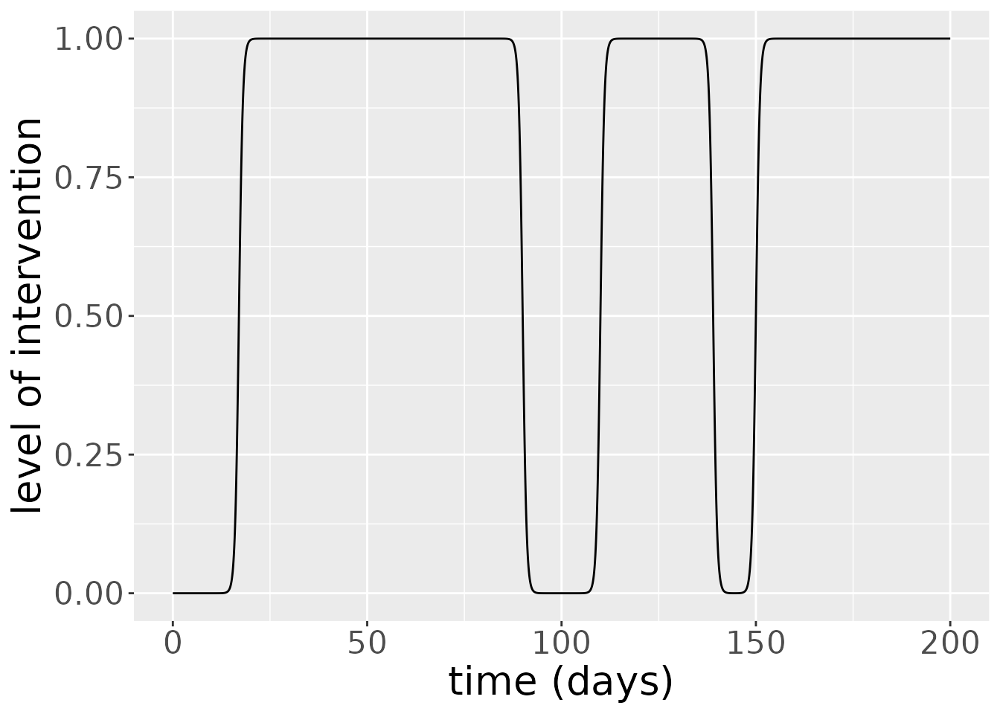
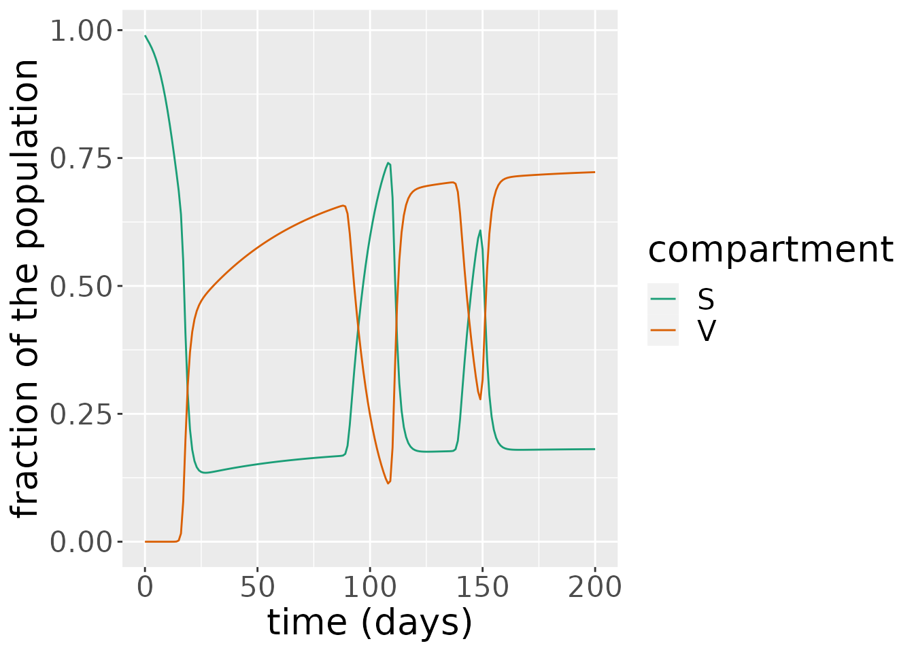
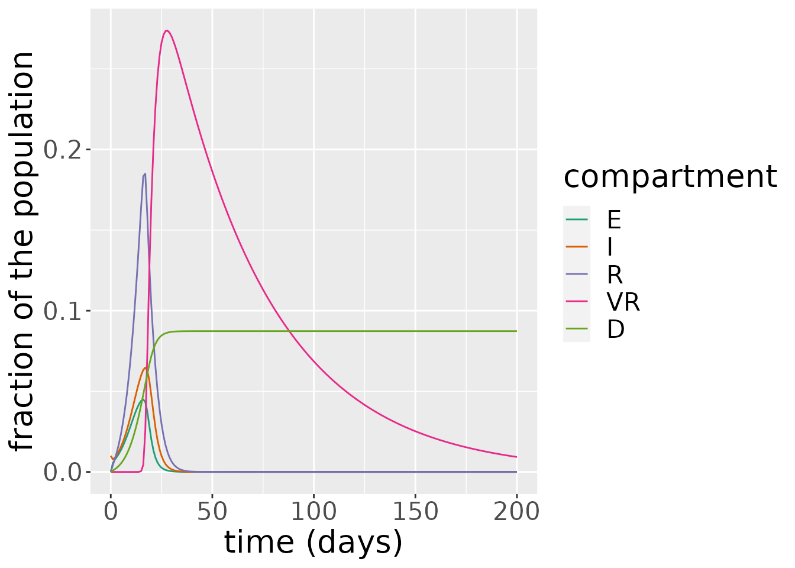
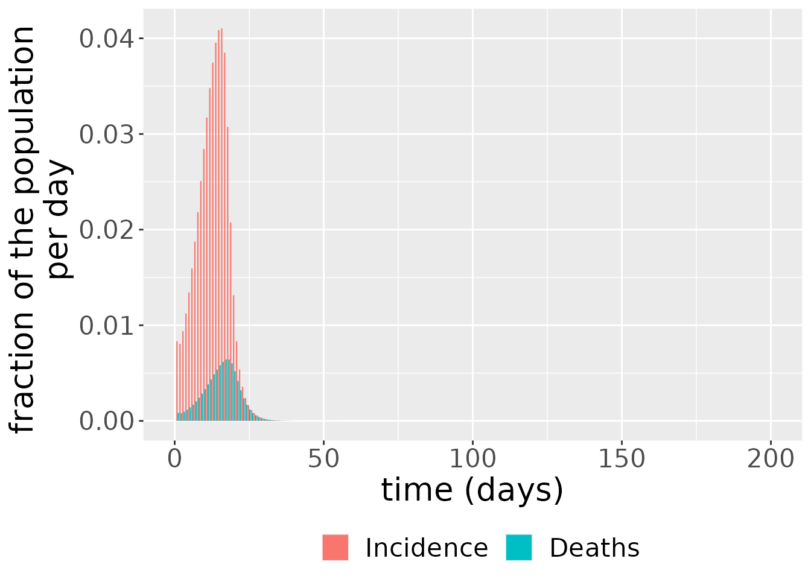
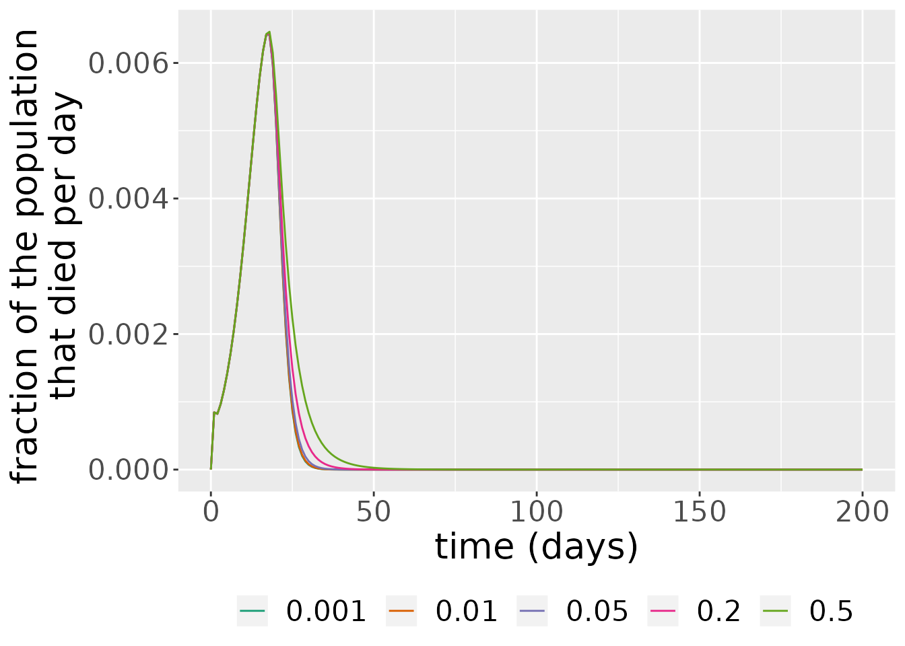
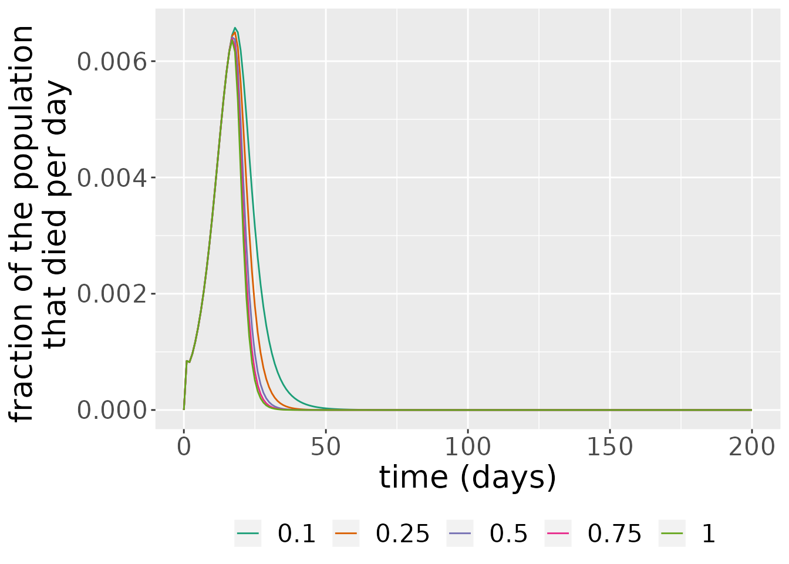
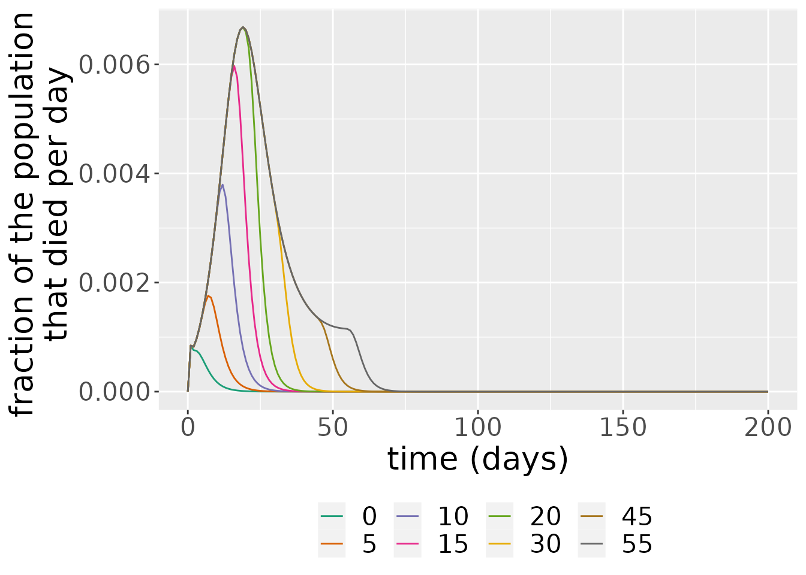

Vaccinations model
Ioana Bouros
SEIRDV.Rmd
library(comomodels)
library(tidyverse)
#> ── Attaching packages ─────────────────────────────────────── tidyverse 1.3.1 ──
#> ✔ ggplot2 3.3.5 ✔ purrr 0.3.4
#> ✔ tibble 3.1.6 ✔ dplyr 1.0.7
#> ✔ tidyr 1.1.4 ✔ stringr 1.4.0
#> ✔ readr 2.1.1 ✔ forcats 0.5.1
#> ── Conflicts ────────────────────────────────────────── tidyverse_conflicts() ──
#> ✖ dplyr::filter() masks stats::filter()
#> ✖ dplyr::lag() masks stats::lag()
library(ggplot2)
library(glue)
library(dplyr)Introduction
This document explains the basics of the SEIRV model. The model describes how populations of susceptible, exposed, infectious, recovered and vaccinated individuals evolve over time. Waning immunity is also considered in this model, so there is a constant supply of susceptibles in the population which makes the model more realistic.
The SEIRDV Model
The SEIRDV model consists of five ODEs describing five populations of susceptible, recovered, infectious, recovered and vaccinated individuals. Susceptible individuals (\(S\)) have not been exposed to the virus. Exposed individuals (\(E\)) have been exposed to the virus and have been infected but are not yet infectious to others; they are in the incubation period. Infectious individuals (\(I\)) can spread the virus to others. Recovered individuals (\(R\)) are no longer infectious, but they can return to the susceptible population when they lose their immunity. Vaccinated individuals (\(V\)) cannot become infected and are not ill at the time, but as it was the case with the recovered population, their immunity is temporary and they can become susceptible again with a certain rate. We can vaccinate not only the susceptibles, but also \(E\), \(I\) and \(R\)s. However, they have already been exposed to the illness so they do not change compartment assignment. Births and deaths unrelated to the infection are not considered in this model. The ODEs describing how the five populations evolve over time are \[\frac{\text{d}S}{\text{d}t} = -\beta S I - \nu \text{Inter}(t) S + \delta_V V + \delta_R R + \delta_{VR} VR,\] \[\frac{\text{d}E}{\text{d}t} = \beta S I -\kappa E,\] \[\frac{\text{d}I}{\text{d}t} = \kappa E - (\gamma + \mu) I,\] \[\frac{\text{d}R}{\text{d}t} = \gamma I - \delta_R R - \nu \text{Inter}(t) R,\] \[\frac{\text{d}V}{\text{d}t} = \nu \text{Inter}(t) S - \delta_V V\] \[\frac{\text{d}VR}{\text{d}t} = \nu \text{Inter}(t) R - \delta_{VR} VR\]
where \(\beta\), \(\kappa\), \(\gamma\), \(\mu\), \(\nu\), \(\delta_V\), \(\delta_R\) and \(\delta_{VR}\) are positive parameters. The rate at which susceptible individuals are infected depends on the fraction of the population that is susceptible, the fraction of the population that is infectious, and the odds of an infectious individual infecting a susceptible individual, \(\beta\). This is represented in the first terms on the right-hand side of \(\text{d}S/ \text{d}t\) and \(\text{d}E/ \text{d}t\). Exposed individuals become infectious at rate \(\kappa\). \(1/ \kappa\) is the incubation time of the virus, i.e. how many days after exposure the individual becomes infectious to others. Infectious individuals can either recover or die because of the disease. Infectious individuals recover in \(1/ \gamma\) days, thus individuals recover at rate \(\gamma\). Similarly, infectious individuals die due to the infection after \(1/ \mu\) days, making the death rate \(\mu\). Susceptible individuals are vaccinated at a maximum rate \(\nu\). Among those who are immune (recovered and vaccinated), people lose their immunity against the virus at different rates depending on what type of immunity they acquired: \(\delta_V\) for those vaccinated, \(\delta_R\) for those previously infected and \(\delta_VR\) for those previously infected that received the vaccine after they recovered. \(\text{Inter}(t)\) is the value at time t of the intervention protocol defined by the intervention parameters.
In addition to these five main ODEs, the model also keeps track of the cumulative number of cases (\(C\)) and the cumulative number of disease-related deaths (\(D\)) over time \[\frac{\text{d}C}{\text{d}t} = \beta S I,\] \[\frac{\text{d}D}{\text{d}t} = \mu I.\]
The system is closed by specifying the initial conditions \[S(0) = S_0,\ E(0) = E_0,\ I(0) = I_0,\ R(0) = R_0,\ V(0) = V_0, VR(0) = VR_0,\ C(0) = 0,\ D(0) = 0.\] In the implementation of the model in this package, the variables are normalized so \(S(t) + E(t) + I(t) + R(t) + V(t) + VR(t) + D(t) \equiv 1\) for any given \(t\). This means that each of these state variables represents the fraction of the population in each of these states at a given point in time.
We next illustrate how this model works using functionality available in comomodels.
The SEIRDV class
We first create an SEIRDV object that we will use to run simulations.
my_model <- SEIRDV()Next, we set the parameter values for \(\beta\), \(\kappa\), \(\gamma\), \(\mu\), \(\nu\), \(\delta_V\), \(\delta_R\) and \(\delta_{VR}\):
params <- list(beta=1, kappa=0.9, gamma=0.5, mu=0.1, nu=0.4, delta_V=0.1,
delta_R=0.05, delta_VR = 0.02)
transmission_parameters(my_model) <- paramsTo check that the parameters have been set correctly, we call
transmission_parameters(my_model)
#> $beta
#> [1] 1
#>
#> $kappa
#> [1] 0.9
#>
#> $gamma
#> [1] 0.5
#>
#> $mu
#> [1] 0.1
#>
#> $nu
#> [1] 0.4
#>
#> $delta_V
#> [1] 0.1
#>
#> $delta_R
#> [1] 0.05
#>
#> $delta_VR
#> [1] 0.02We now need to set the initial conditions for the model. We only set the initial conditions \(S(0)\), \(E(0)\), \(I(0)\), \(R(0)\), \(V(0)\) and \(VR(0)\).
initial_conditions(my_model) <- list(S0=0.99, E0=0, I0=0.01, R0=0, V0=0, VR0=0)The initial conditions must sum to one. If they do not, an error is thrown.
Now we simulate the system from \(t=0\) days to \(t=200\) days.
intervention_parameters(my_model) <- list(starts=c(17, 110, 150),
stops=c(90, 139, 209),
coverages=c(1, 1, 1))
times <- seq(0, 200, by = 1)
out_df <- run(my_model, times)The added intervention feature allows for variable levels of vaccination in a population. In most cases, a vaccine is not available or considered necessary right from the start of an epidemic so there is a delay in vaccination. Similarly, vaccination programs may not run at the same rate all the time, so such fluctuations need to be taken into account in our modeling.
Below we can see a plot of the level of interventions that occur at each time step.
int_parms <- InterventionParameters(start=c(17, 110, 150),
stop=c(90, 139, 209),
coverage=c(1, 1, 1))
sim_parms <- SimulationParameters(start=0, stop=200, tstep = 0.1)
intervention_protocol(int_parms, sim_parms, 1) %>%
ggplot(aes(x=time, y=coverage)) +
geom_line() +
scale_color_brewer(palette = "Dark2") +
labs(x = "time (days)", y = "level of intervention") +
theme(text = element_text(size = 20)) Interventions for this model last several days at least and have several days between them.
The simulation returns two objects: one is a data frame comprising the states over time. Here, the infectious proportion is steadily declining, plummeting to 0 after \(t=20\).
states <- out_df$states
sv <- subset(states, states$compartment %in% c("S", "V"))
ggplot(sv, aes(x = time, y = value)) +
geom_line(aes(color = compartment)) +
scale_color_brewer(palette = "Dark2") +
labs(x = "time (days)", y = "fraction of the population") +
theme(text = element_text(size = 20)) 
eird <- subset(states, !states$compartment %in% c("S", "V"))
ggplot(eird, aes(x = time, y = value)) +
geom_line(aes(color = compartment)) +
scale_color_brewer(palette = "Dark2") +
labs(x = "time (days)", y = "fraction of the population") +
theme(text = element_text(size = 20)) 
The simulation also outputs incidence and deaths. These are derived from the state variables. Incidence is just the difference between the cumulative number of cases between two time points,
\[ \text{incidence(t)} = C(t) - C(t - 1),\]
since this shows the number of cases which have arisen between these time points. Deaths are also given by a difference, but, in this instance, between the cumulative number of deaths at two consecutive time points:
\[ \text{deaths(t)} = D(t) - D(t - 1).\]
changes <- out_df$changes
ggplot(changes, aes(x = time, y = value, fill = compartment)) +
geom_bar(stat="identity", position = position_dodge()) +
scale_color_brewer(palette = "Dark2") +
labs(x = "time (days)", y = "fraction of the population \n per day") +
theme(legend.position = "bottom", legend.title = element_blank(),
text = element_text(size = 20))
Sensitivity analysis
In this section, we investigate the sensitivity of the number of deaths to the loss-of-immunity rate in vaccinated individuals, \(\delta_V\). We run the model for varying values of \(\delta_V\) and plot the number of deaths per day over time.
# function to setup and run model for different delta_V values
run_seirdv <- function(delta_V_val) {
inits <- list(S0=0.99, E0=0, I0=0.01, R0=0, V0=0, VR0=0)
params <- list(beta=1, kappa=0.9, gamma=0.5, mu=0.1, nu=0.4, delta_V=delta_V_val,
delta_R=0.05, delta_VR = 0.02)
interv<- list(starts=c(17, 110, 150),
stops=c(90, 139, 209),
coverages=c(1, 1, 1))
model <- SEIRDV(initial_conditions = inits,
transmission_parameters=params,
intervention_parameters = interv)
times <- seq(0, 200, by = 1)
out_df <- run(model, times)
out_df$changes
}
# run model across different delta_V values
delta_V_vals <- c(0.001, 0.05, 0.01, 0.2, 0.5)
for(i in seq_along(delta_V_vals)) {
delta_V_temp <- delta_V_vals[i]
temp <- run_seirdv(delta_V_temp) %>% mutate(delta_V=delta_V_temp)
if(i == 1)
result <- temp %>% mutate(delta_V=delta_V_temp)
else
result <- result %>% bind_rows(temp)
}
# plot results
result %>%
filter(compartment=="Deaths") %>%
ggplot(aes(x=time, y=value, color = as.factor(delta_V))) +
geom_line(stat = "identity", position = position_dodge()) +
scale_color_brewer(palette = "Dark2") +
labs(x = "time (days)", y = "fraction of the population \n that died per day") +
theme(legend.position = "bottom", legend.title = element_blank(),
text=element_text(size=20))
#> Warning: Width not defined. Set with `position_dodge(width = ?)` As we can see from the plot above, larger rates of immunity decay \(\delta_V\) in vaccinated individuals make the wave of the number of deaths in the epidemic last longer.
We now investigate the sensitivity of the number of deaths to the maximum vaccination rate, \(\nu\). We run the model for varying values of \(\nu\) and plot the number of deaths per day over time.
# function to setup and run model for different nu values
run_seirdv <- function(nu_val) {
inits <- list(S0=0.99, E0=0, I0=0.01, R0=0, V0=0, VR0=0)
params <- list(beta=1, kappa=0.9, gamma=0.5, mu=0.1, nu=nu_val, delta_V=0.1,
delta_R=0.05, delta_VR = 0.02)
interv<- list(starts=c(17, 110, 150),
stops=c(90, 139, 209),
coverages=c(1, 1, 1))
model <- SEIRDV(initial_conditions = inits,
transmission_parameters=params,
intervention_parameters = interv)
times <- seq(0, 200, by = 1)
out_df <- run(model, times)
out_df$changes
}
# run model across different nu values
nu_vals <- c(0.1, 0.25, 0.5, 0.75, 1)
for(i in seq_along(nu_vals)) {
nu_temp <- nu_vals[i]
temp <- run_seirdv(nu_temp) %>% mutate(nu=nu_temp)
if(i == 1)
result <- temp %>% mutate(nu=nu_temp)
else
result <- result %>% bind_rows(temp)
}
# plot results
result %>%
filter(compartment=="Deaths") %>%
ggplot(aes(x=time, y=value, color = as.factor(nu))) +
geom_line(stat = "identity", position = position_dodge()) +
scale_color_brewer(palette = "Dark2") +
labs(x = "time (days)", y = "fraction of the population \n that died per day") +
theme(legend.position = "bottom", legend.title = element_blank(),
text=element_text(size=20))
#> Warning: Width not defined. Set with `position_dodge(width = ?)` As we can see from the plot above, larger rates of maximum vaccination \(\nu\) make the height and duration of wave of the number of deaths in the epidemic last less.
We now investigate the sensitivity of the start time of intervention values, start_val. We run the model for varying values of start_val and plot the number of deaths per day over time.
For this investigation, we are switching to a new intervention that starts at start_val and continues to 100, rather than the one you’ve been using previously
# function to setup and run model for different start intervention values
run_seirdv <- function(start_val) {
inits <- list(S0=0.99, E0=0, I0=0.01, R0=0, V0=0, VR0=0)
params <- list(beta=1, kappa=0.9, gamma=0.5, mu=0.1, nu=0.4, delta_V=0.1,
delta_R=0.05, delta_VR = 0.02)
interv<- list(starts=start_val,
stops=100,
coverages=1)
model <- SEIRDV(initial_conditions = inits,
transmission_parameters=params,
intervention_parameters = interv)
times <- seq(0, 200, by = 1)
out_df <- run(model, times)
out_df$changes
}
# run model across different start_val values
start_val <- c(0, 5, 10, 15, 20, 30, 45, 55)
for(i in seq_along(start_val)) {
start_temp <- start_val[i]
temp <- run_seirdv(start_temp) %>% mutate(starts=start_temp)
if(i == 1)
result <- temp %>% mutate(starts=start_temp)
else
result <- result %>% bind_rows(temp)
}
# plot results
result %>%
filter(compartment=="Deaths") %>%
ggplot(aes(x=time, y=value, color = as.factor(starts))) +
geom_line(stat = "identity", position = position_dodge()) +
scale_color_brewer(palette = "Dark2") +
labs(x = "time (days)", y = "fraction of the population \n that died per day") +
theme(legend.position = "bottom", legend.title = element_blank(),
text=element_text(size=20))
#> Warning: Width not defined. Set with `position_dodge(width = ?)` As we can see from the plot above, larger start time of intervention values, start_val produces deaths for much longer and the peak of their number is higher than in the case of smaller start_val.